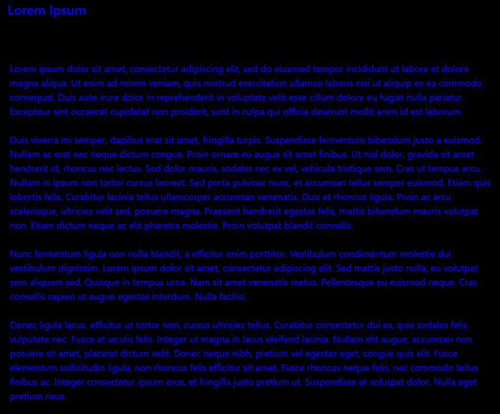
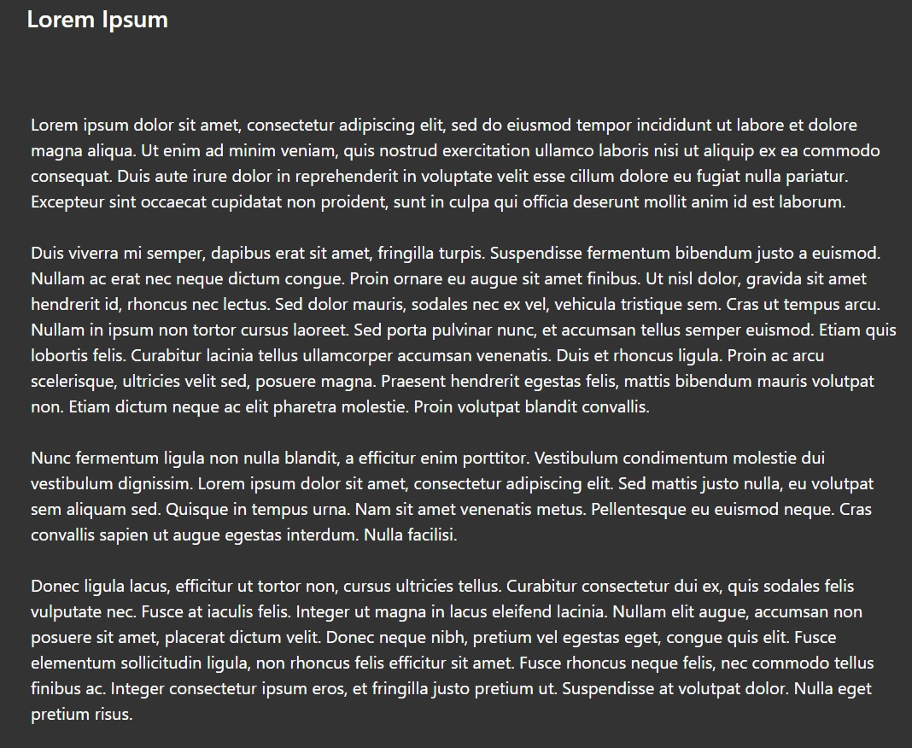

What is "Change Colour!"?
Sometimes when you are designing how to present your content on webpage, you may have to choose which kind of colour of text and background that you should use. But it may not be that convenience to code it yourself.
So I wrote a simple javascript program called "Change Colour!" to help you to test how the webpage will look like instantly!
How it works?
You can change the background, heading, and paragraph colour by clicking on "Change" button after you input RGB value, such as #555555 for gray, or you can use a valid property of CSS to change colour .
Don't forget to start with "#" if you would like to use hexadecimal to represent the colour.
Please check CSS Colours List for more detail about CSS colour keywords.
What is colour theory?
Here is the description at Wikipedia:
"In the visual arts, color theory is a body of practical guidance to color mixing and the visual effects of a specific color combination. There are also definitions (or categories) of colors based on hues of the color wheel: primary color, secondary color, and tertiary color."
How to choose colour is a huge topic. What may be most important for now is concerning about complementary colours.
This is an example of using bad choose of colour, creating worst user experience:
It is very hard for human to see any content in the page right? Now let's see how to make it better:
First of all, I set the background colour to #333333, which is a colour between black(#000000) and gray(#55555), to make it feels like a "dark mode"(sort of protecting human eyes).
Then, both colour of heading and text are set to white, giving a stronger contrast to show all content in the body of the page. Thus user can be more focusing on the content.
The reason of why not choosing black as background colour is because it will create a strongest contrast between black and white. This may let user feel words in the page are too bright.
It is not that easy to design your webpage if it contain image or video or animation. But first let's try out how to choose right colour of background and words!